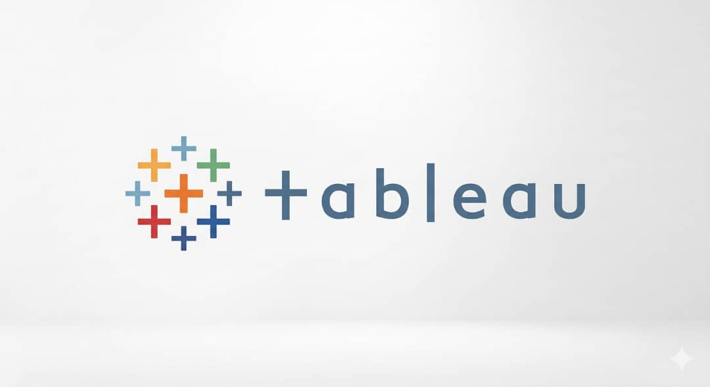

Adventure Works Data Warehouse & Exploratory Data Analysis Project
Building a complete and fully operational data warehouse, and performing Exploratory data analysis to understand the data.
Skilled Business Intelligence & Data Analyst with a mastery of SQL Server, SQL (Mysql), Data Studio, Microsoft Fabric, Statistics, Power BI, Tableau
, Databricks, Excel (VLookup, Conditional Formatting, Pivot tables, and Dasboards), Python (Pandas, Numpy & Matplotlib), & R Programming @Paul Ojame
Building a complete and fully operational data warehouse, and performing Exploratory data analysis to understand the data.

This project analyzes customer order fulfillment using the Brazilian E-Commerce Public Dataset by Olist from Kaggle. The objective was to build a Delivery Funnel Analysis in MySQL to track how customers move from placing an order to successfully receiving their package. This project highlights operational performance and identifies drop-offs between payment, approval, and delivery stages.
This project analyzes 20 merged cryptocurrency datasets to monitor market performance, evaluate asset risk levels, and identify patterns that support data-driven investment and portfolio decisions.

This contains all of my tableau visualizations and dashboards.

This contains all of my Power BI visualizations and dashboards.

This project analyzes retail sales data to understand customer purchasing behavior, category performance, revenue drivers, and payment method preferences. The goal was to create an executive-level dashboard that allows stakeholders to quickly monitor performance and make data-driven decisions.

Business problem: The marketing team spends money across multiple platforms but doesn't know which ones generate the most business value.
Lagos State, Nigeria